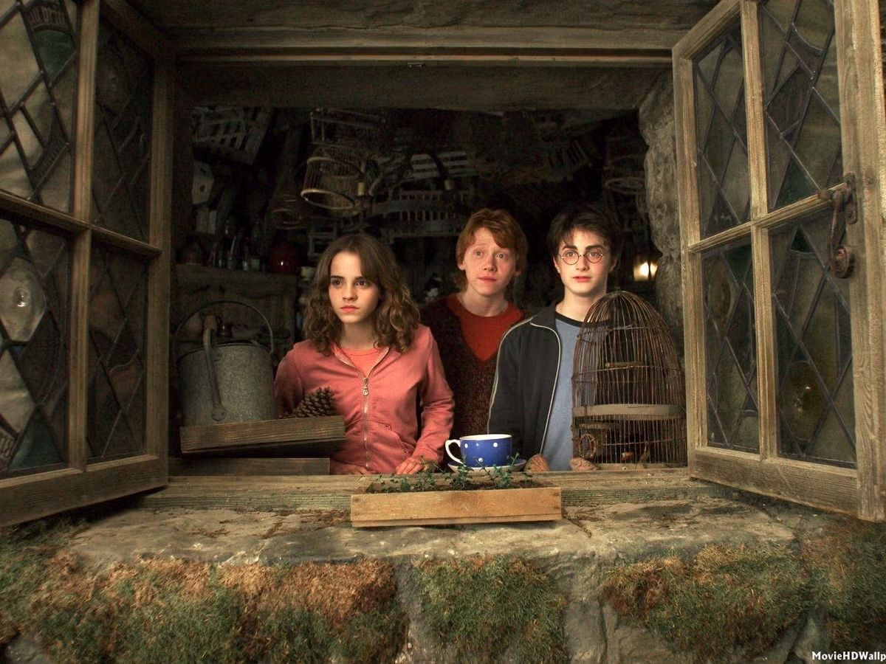

Hermione Granger todavía no se acostumbra del todo a este mundo. Hace poco era una chica muggle y hoy almuerza en el Gran Salón de Hogwarts, bajo un techo que imita el cielo y entre cientos de velas flotantes. A su lado están Harry Potter, el niño que vivió, y Ron Weasley, de sangre pura, que devora su plato sin respirar.
Afuera el cielo se oscurece más de lo normal. Se dice que hay criaturas rondando el castillo, pero nadie explica por qué.
Terminan de comer y salen del Gran Salón. El pasillo está en penumbras y las armaduras parecen vigilarlos. Hermione se detiene: tiene que decidir a dónde ir.